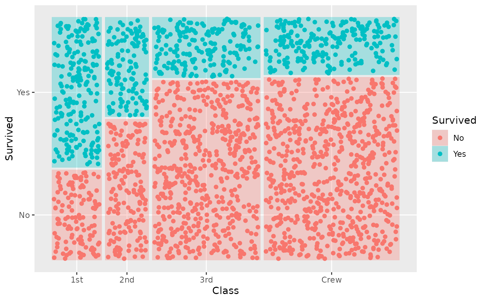
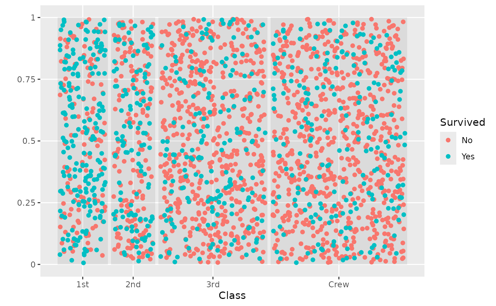
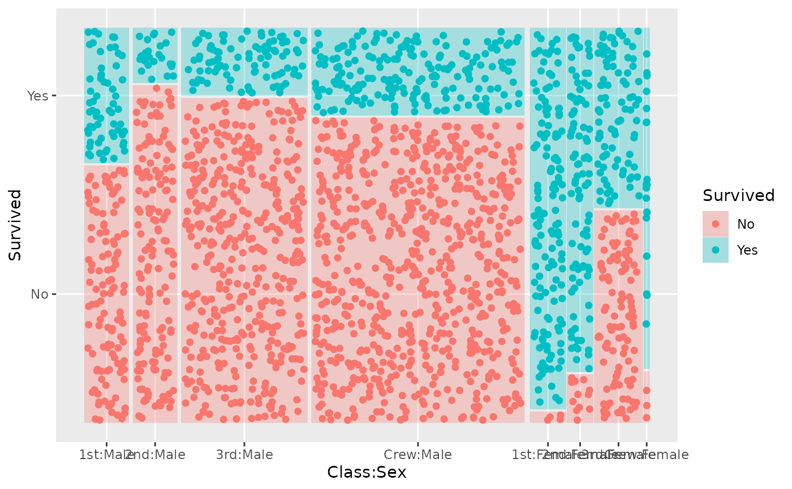
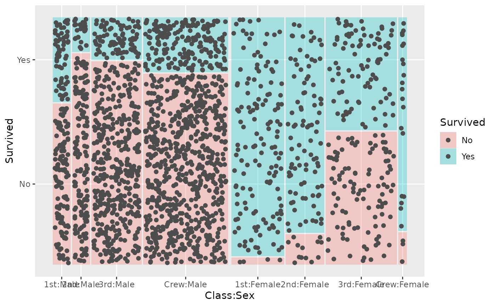

R/geom-mosaic-jitter.R, R/stat-mosaic-jitter.r
geom_mosaic_jitter.RdA mosaic plat with jittered dots
geom_mosaic_jitter(
mapping = NULL,
data = NULL,
stat = "mosaic_jitter",
position = "identity",
na.rm = FALSE,
divider = mosaic(),
offset = 0.01,
drop_level = FALSE,
seed = NA,
show.legend = NA,
inherit.aes = FALSE,
...
)
stat_mosaic_jitter(
mapping = NULL,
data = NULL,
geom = "mosaic_jitter",
position = "identity",
na.rm = FALSE,
divider = mosaic(),
show.legend = NA,
inherit.aes = TRUE,
offset = 0.01,
drop_level = FALSE,
seed = NA,
...
)Set of aesthetic mappings created by aes(). If specified and
inherit.aes = TRUE (the default), it is combined with the default mapping
at the top level of the plot. You must supply mapping if there is no plot
mapping.
The data to be displayed in this layer. There are three options:
If NULL, the default, the data is inherited from the plot
data as specified in the call to ggplot().
A data.frame, or other object, will override the plot
data. All objects will be fortified to produce a data frame. See
fortify() for which variables will be created.
A function will be called with a single argument,
the plot data. The return value must be a data.frame, and
will be used as the layer data. A function can be created
from a formula (e.g. ~ head(.x, 10)).
The statistical transformation to use on the data for this
layer, either as a ggproto Geom subclass or as a string naming the
stat stripped of the stat_ prefix (e.g. "count" rather than
"stat_count")
Position adjustment, either as a string naming the adjustment
(e.g. "jitter" to use position_jitter), or the result of a call to a
position adjustment function. Use the latter if you need to change the
settings of the adjustment.
If FALSE (the default), removes missing values with a warning. If TRUE silently removes missing values.
Divider function. The default divider function is mosaic() which will use spines in alternating directions. The four options for partitioning:
vspine Vertical spine partition: width constant, height varies.
hspine Horizontal spine partition: height constant, width varies.
vbar Vertical bar partition: height constant, width varies.
hbar Horizontal bar partition: width constant, height varies.
Set the space between the first spine
Generate points for the max - 1 level
Random seed passed to set.seed. Defaults to
NA, which means that set.seed will not be called.
logical. Should this layer be included in the legends?
NA, the default, includes if any aesthetics are mapped.
FALSE never includes, and TRUE always includes.
It can also be a named logical vector to finely select the aesthetics to
display.
If FALSE, overrides the default aesthetics,
rather than combining with them. This is most useful for helper functions
that define both data and aesthetics and shouldn't inherit behaviour from
the default plot specification, e.g. borders().
other arguments passed on to layer. These are often aesthetics, used to set an aesthetic to a fixed value, like color = 'red' or size = 3. They may also be parameters to the paired geom/stat.
The geometric object to use to display the data, either as a
ggproto Geom subclass or as a string naming the geom stripped of the
geom_ prefix (e.g. "point" rather than "geom_point")
location of bottom left corner
location of bottom right corner
location of top left corner
location of top right corner
data(titanic)
ggplot(data = titanic) +
geom_mosaic(aes(x = product(Class), fill = Survived), alpha = 0.3) +
geom_mosaic_jitter(aes(x = product(Class), color = Survived))

ggplot(data = titanic) +
geom_mosaic(aes(x = product(Class)), alpha = 0.1) +
geom_mosaic_jitter(aes(x = product(Class), color = Survived), drop_level = TRUE)
#> Joining with `by = join_by(x__Class)`

ggplot(data = titanic) +
geom_mosaic(alpha = 0.3, aes(x = product(Class, Sex), fill = Survived),
divider = c("vspine", "hspine", "hspine")) +
geom_mosaic_jitter(aes(x = product(Class, Sex), color = Survived),
divider = c("vspine", "hspine", "hspine"))

ggplot(data = titanic) +
geom_mosaic(alpha = 0.3, aes(x = product(Class), conds = product(Sex), fill = Survived),
divider = c("vspine", "hspine", "hspine")) +
geom_mosaic_jitter(aes(x = product(Class), conds = product(Sex), fill = Survived),
divider = c("vspine", "hspine", "hspine"))
